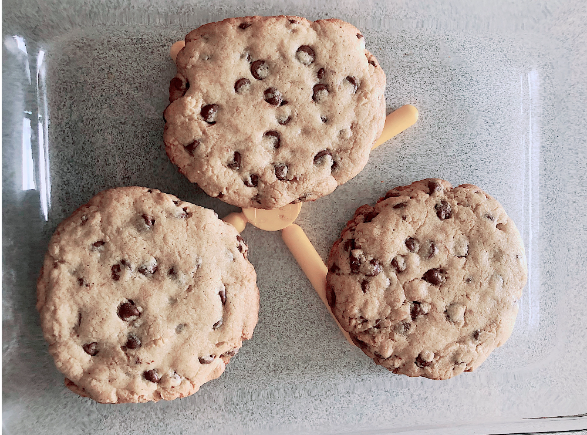
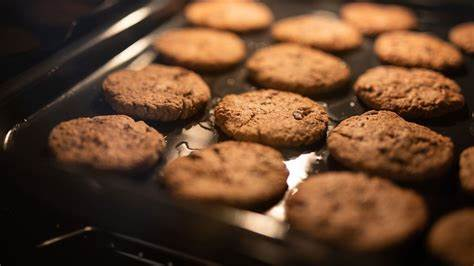

Galletas Caseras
Aprende a preparar unas deliciosas galletas caseras con esta receta fácil y rápida.
Ingredientes
- 2 ½ tazas de harina de trigo
- 1 taza de mantequilla (a temperatura ambiente)
- 1 taza de azúcar
- 2 huevos
- 1 cucharadita de esencia de vainilla
- 1 cucharadita de polvo para hornear
- 1 pizca de sal
Instrucciones
- Precalienta el horno a 180 °C (350 °F).
- En un tazón grande, bate la mantequilla con el azúcar hasta obtener una mezcla cremosa.
- Añade los huevos uno a uno y la vainilla. Mezcla bien.
- Incorpora la harina, el polvo para hornear y la sal poco a poco.
- Forma bolitas con la masa y colócalas en una bandeja con papel encerado.
- Hornea durante 10-12 minutos o hasta que los bordes estén dorados.
- Deja enfriar y ¡disfruta tus galletas caseras!
Imágenes del proceso


Enlaces útiles
Para más recetas puedes visitar: